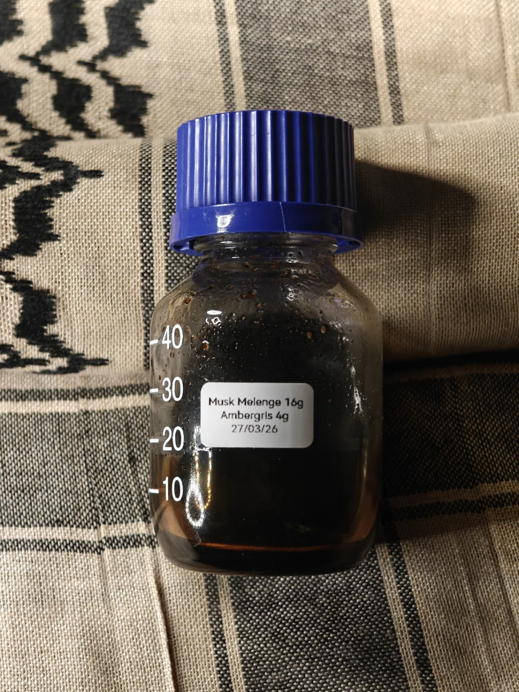

3 Musk x Ambergris
What happens when you mix Tibetan, Tonkin, and Mongolian deer musk, Mysore sandalwood that was distilled when you were barely 3 years old, and white ambergris from the coast of Ireland?
A tremendously animalic material that is packed with pure, naturally occurring, and coveted materials that has caused immense discourse throughout history merged into a single bottle of just 20g - no more of this will probably be ever made.
Raw deer musk pods sourced from Tibet, Vietnam, and Mongolia were used with love and reverence - how could we not do so - to be mixed with ethically sourced white graded ambergris using only aged sandalwood as the medium.
No mechanical agitation, no fancy equipment, no heat treatment except a bath of fresh boiled water to help manually agitate it in a sealed bottle during the cold nights of a British nearly-ending autumn.
Anyone who is even remotely exposed to these individual materials know without a doubt how neurologically therapeutic these are;
from the rich clean intensity of musk, to the sweet oceanic allure of ambergris.
The catalysis of a sensory lull of an aged sandalwood from Mysore binds these together to form an unforgettable olfactive experience.